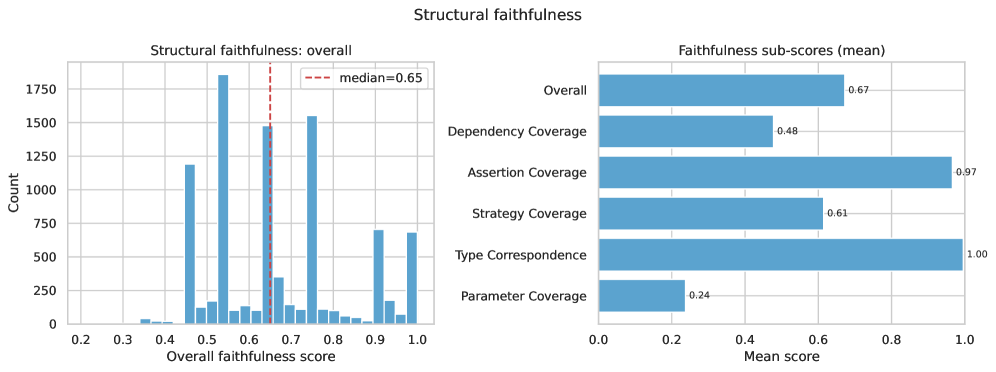
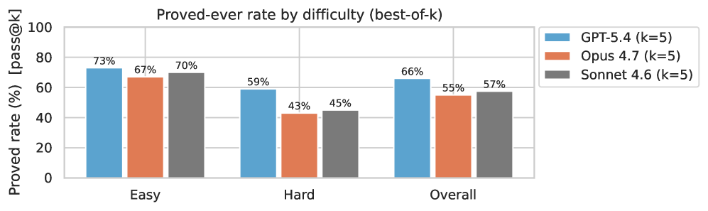
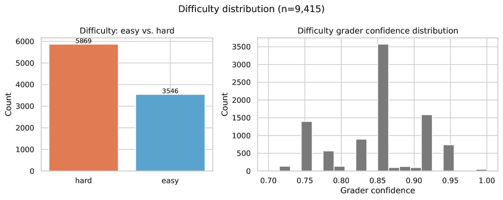

Translates real-world Python property-based tests into Lean 4 implementations and sorry-placeholder theorem statements, then benchmarks AI proof generation on them.
Abstract
As AI systems generate an ever-growing share of the world's code, formal verification offers a principled way to ensure that code is correct, and AI itself may be able to shoulder much of the verification burden. Yet we lack a clear picture of how well today's models and agents perform on verification tasks drawn from real-world software, since existing benchmarks rely largely on curated or synthetic problems, or focus on math rather than program verification. To close this gap, we present a benchmark for evaluating AI on real-world formal software verification tasks. We first scrape 7,413 distinct property-based tests (PBTs) from real-world Python repositories, then automatically translate 2,623 of them (35%) into 9,415 Lean 4 specifications with sorry placeholders (3.5 formalizations/PBT). Translating PBTs to Lean specs is challenging: it requires modeling Python in Lean, inferring the property encoded in a PBT, and handling side effects. We describe an agentic pipeline for transpiling PBTs into Lean, evaluate coverage and quality metrics, and provide baselines for proof generation using several approaches. All code (scraper and agents) and data (PBTs and Lean specs) are open source.
Problem
Existing formal verification benchmarks are small, focus on mathematics, or come from curated, synthetic, or expert-driven sources. This leaves unclear how well AI performs on verifying ordinary real-world software.
Approach
7,413 distinct Hypothesis property-based tests were scraped from public Python GitHub repositories, with deduplication and license filtering. An agentic pipeline built on Claude Sonnet transpiles each test into a Lean 4 implementation (Impl.lean) and a specification (Spec.lean) whose theorems carry sorry placeholders. Effectful code such as databases, queues and clocks is modeled as uninterpreted axioms. Translation quality is measured with a composite structural-faithfulness metric, and difficulty is assigned by a calibrated predictor.

Figure 4: Structural-faithfulness scores across the published FVSpec:FV dataset. Left : histogram of per-sample overall scores (median 0.65; the multi-modal shape reflects the discrete denominators of the underlying ratios). Right : mean per-sub-metric scores. Type correspondence ( 1.00 ) and assertion coverage ( 0.97 ) are near-saturated—most translations preserve types and predicates—while param
Results
The released dataset contains 9,415 Lean 4 challenges (75,005 theorems) from 2,772 unique tests, with median structural faithfulness 0.65 and 62% of challenges classified as hard. Baseline proof attempts by three frontier models show the benchmark is far from saturated, especially on hard problems.

Figure 6: Baseline prove rate

Figure 9: Difficulty distribution: easy vs. hard counts (left) and grader confidence distribution (right). n shown in title.